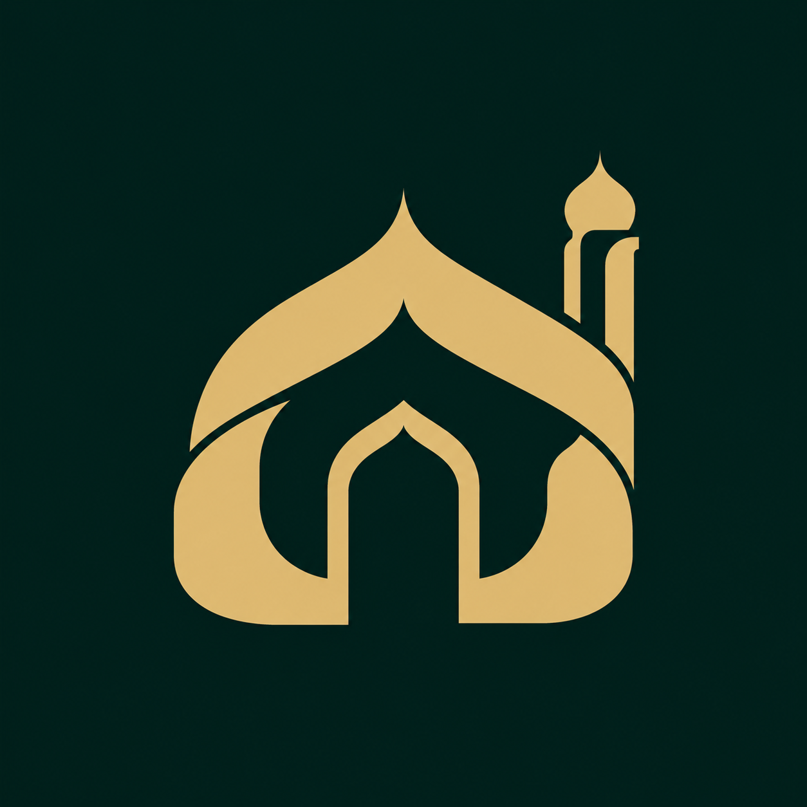

A · Meine Empfehlung
Ruhige Architektur
Eine zusammenhängende Form, ein Minarett und ein klarer Eingang. Die stärkste Richtung für ein kompaktes App-Icon.
96 px
48 px
32 px
Die App-Farben bleiben Smaragd und Gold. Hier geht es um die Silhouette, den Charakter und die Wirkung in kleiner Größe.
Eine zusammenhängende Form, ein Minarett und ein klarer Eingang. Die stärkste Richtung für ein kompaktes App-Icon.

Eine eigenwilligere Kontur mit weichen Übergängen. Die Trennungen müssten für sehr kleine Icons noch vereinfacht werden.
Die religiöse Architektur ist sehr direkt erkennbar. Feierlicher und etwas detailreicher als A.
Gestaltungsentwürfe aus der Bildgenerierung. Die gewählte Form wird anschließend als sauberes SVG mit exakten App-Farben ausgearbeitet; feine Verläufe und kleine Details entfallen dabei.